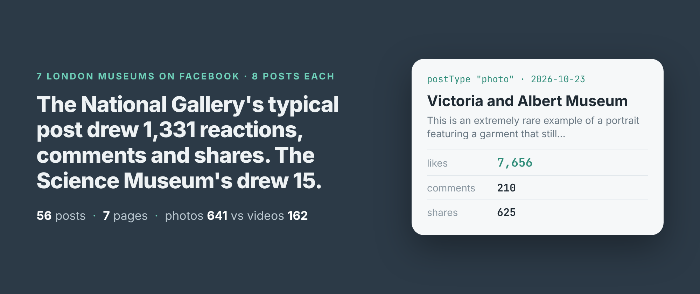
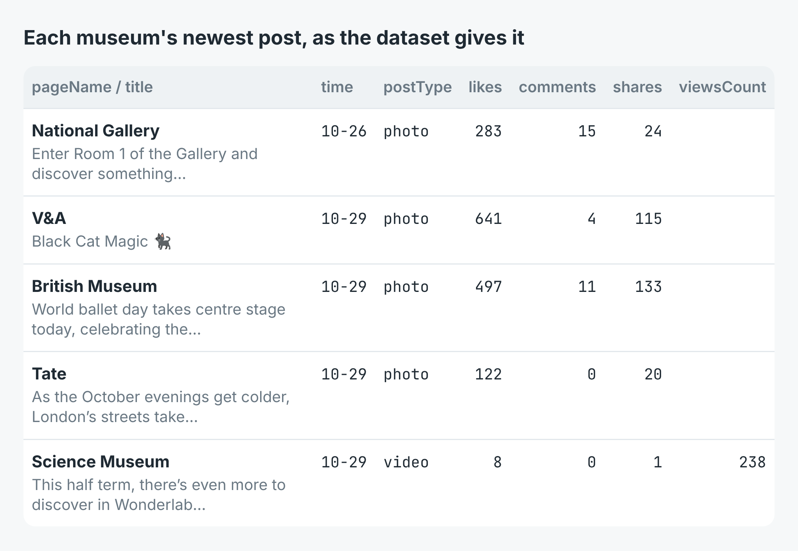
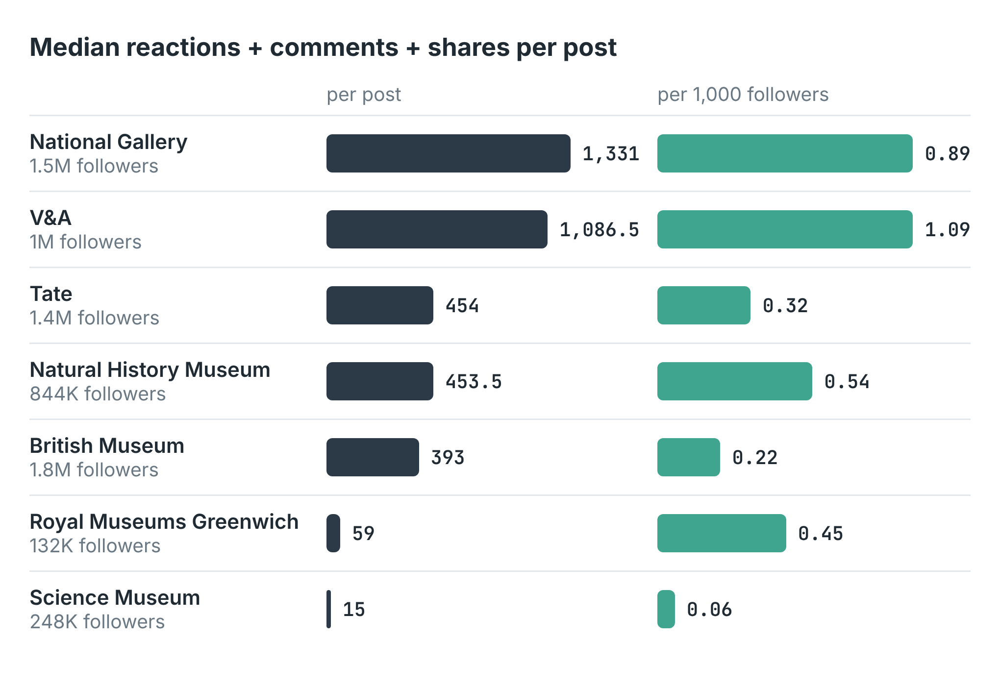
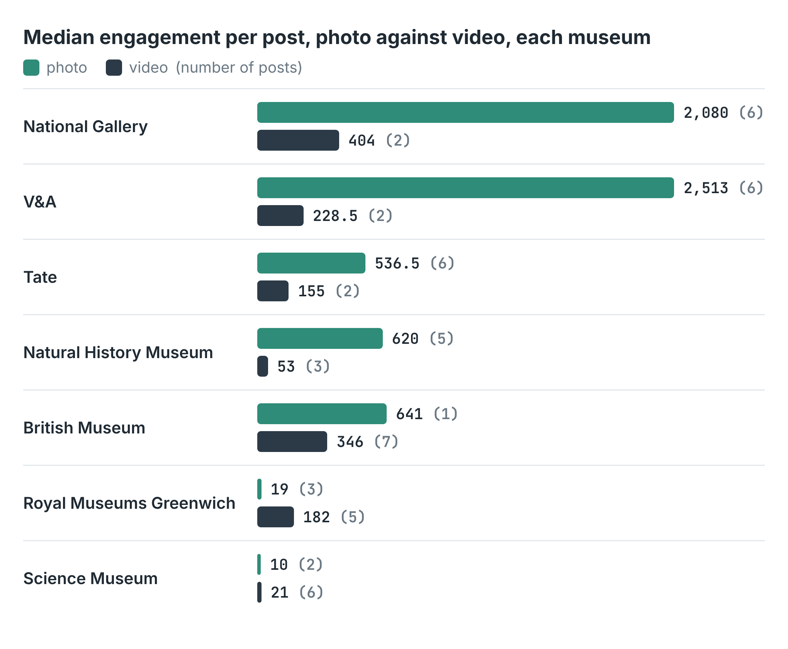

How to compare Facebook engagement between pages (7 London museums, 56 posts)
I wrote this with an AI assistant. The runs, numbers and code are real, and I checked them.

The first page I asked for was the wrong museum. I wanted London's Science Museum, typed facebook.com/sciencemuseum, and got eight posts about a polar vortex, a Halloween party and the Journal of Mammalogy. That address belongs to the Science Museum of Minnesota. London's is facebook.com/sciencemuseumlondon.
It's the mistake worth checking for first when you compare your page with other pages: make sure each URL is the page you think it is. The rest of this post is what the comparison showed once the URLs were right.
The run
I build and run a Facebook page scraper on Apify. Give it public page URLs and it returns each page's latest posts, one row per post: pageName, time, postType (photo, video, link or text), text, likes, comments, shares and, for videos, viewsCount. likes counts every reaction, not only thumbs-up; the seven types are in their own columns, reactionLikeCount to reactionCareCount. No Facebook login and no cookies.
import { ApifyClient } from 'apify-client';
const client = new ApifyClient({ token: process.env.APIFY_TOKEN });
const urls = ['https://www.facebook.com/tategallery'];
const run = await client.actor('simple.actor/facebook-page-posts')
.call({ startUrls: urls.map((url) => ({ url })), maxPosts: 8 });
const { items } = await client
.dataset(run.defaultDatasetId).listItems();
for (const p of items.filter((i) => !i.error))
console.log(p.pageName, p.likes + p.comments + p.shares);
On 30 October 2026 I gave it eight page addresses I took for London museums, with maxPosts at 8, the most it returns. The run took 74 seconds and came back with 57 rows: 8 posts from each of seven pages, Minnesota included, and one error row. The Science Museum's own page went into a second run, 22 seconds, 8 more posts.

Five of the 56 rows, the newest from each of five museums, with the fields as the dataset names them.The ranking, two ways
For each museum I added up reactions, comments and shares on every post and took the median, so one viral post doesn't carry a page. The National Gallery came first at 1,331 a post, then the V&A at 1,086.5. Tate (454), the Natural History Museum (453.5) and the British Museum (393) sat together. Royal Museums Greenwich got 59 and the Science Museum 15.
The British Museum has the most followers of the seven, 1.8 million, and came fifth. So I read each page's follower count too, with the scraper's details mode, and divided. Per 1,000 followers the V&A leads with 1.09, the National Gallery has 0.89, and the British Museum drops to 0.22. Royal Museums Greenwich, with 132,000 followers, goes from sixth to fourth at 0.45.

Median reactions + comments + shares per post, and the same median per 1,000 followers. Follower counts are Facebook's rounded figures.The single biggest post was the V&A's on 23 October, a portrait of a sitter whose garment still survives: 7,656 reactions, 210 comments and 625 shares. Next came the National Gallery's 13 October post about its Jan van Eyck portraits, 6,425 in all, and the V&A's opening of its Freddie Mercury show, 5,752. The British Museum's best was a video called "Stop horsing around", with 52,692 views and 2,754 reactions, comments and shares.
Photos beat video, mostly
29 of the 56 posts were photos and 27 were videos. The median photo drew 641 reactions, comments and shares, the median video 162. That holds inside five of the seven museums. At the V&A, photos had a median of 2,513 against 228.5 for its two videos.

Median engagement bypostType, each museum on its own. The number of posts is in brackets.
The two exceptions are the two smallest pages. Royal Museums Greenwich's videos got a median of 182 against 19 for photos, and the Science Museum's 21 against 10. The British Museum posted seven videos and one photo, so its photo median is one post.
What it cost
The scraper charges $0.003 a run and $0.001 for each post it returns. The first run returned 56 posts, $0.059, eight of them from Minnesota. The second returned 8, $0.011. The follower counts are $0.004 a page in details mode, and seven pages came to $0.028. The whole comparison cost a caller $0.098. Done right first time, it would have been one posts run at $0.059 and the same $0.028 for followers.
Where the numbers stop
Eight posts is the most there is. Facebook serves a logged-out reader about eight posts in one request, and asking again returns the same eight, so maxPosts stops at 8. Eight posts reached back 9.1 days at Tate and 16 days at the Science Museum. A page that posts three times a day gives you three days. For a longer history, run it on a schedule and keep the rows.
Not every page answers. facebook.com/museumoflondon came back as an error row, not_available, which means private, restricted or removed. So did facebook.com/londonmuseum, my guess at a newer address. Error rows aren't charged, but the page is missing from the comparison.
Facebook rate-limits the read. When I tested the example scripts a few minutes later, Facebook refused one of two pages, then both, with "Rate limit exceeded". Each came back as a read_failed row and the run still succeeded. Three tries over two minutes were refused; the same page read cleanly ten minutes later. If you track many pages, spread the runs out.
Follower counts are rounded. Facebook shows "1M followers" for the V&A and gives no exact number, so the per-follower column is only as precise as that. The row says so in followersAreExact, which was false for all seven.
I read the follower counts one page per run. A details run over several pages stopped on its second or third page for me, with the rows read so far saved. One page at a time worked every time. I've reported it.
A post can have no text at all. One Natural History Museum video had no caption, and its title and text both came back empty. The V&A's 20 October post was a share; the row marks it with isShare.
Making it yours
Put your own page first in the list and your three or four nearest rivals after it: the other cafés on your street, the other councils in your county, the other brands on your shelf. Check each pageName against the page you meant. Then run it every week, and you have the median, the best post and the photo-against-video split for each of them, week by week.
The full script, in Node and Python, ranks the pages and writes every post to a CSV. It's in the example repo on GitHub. The scraper is Facebook Page Scraper on Apify.